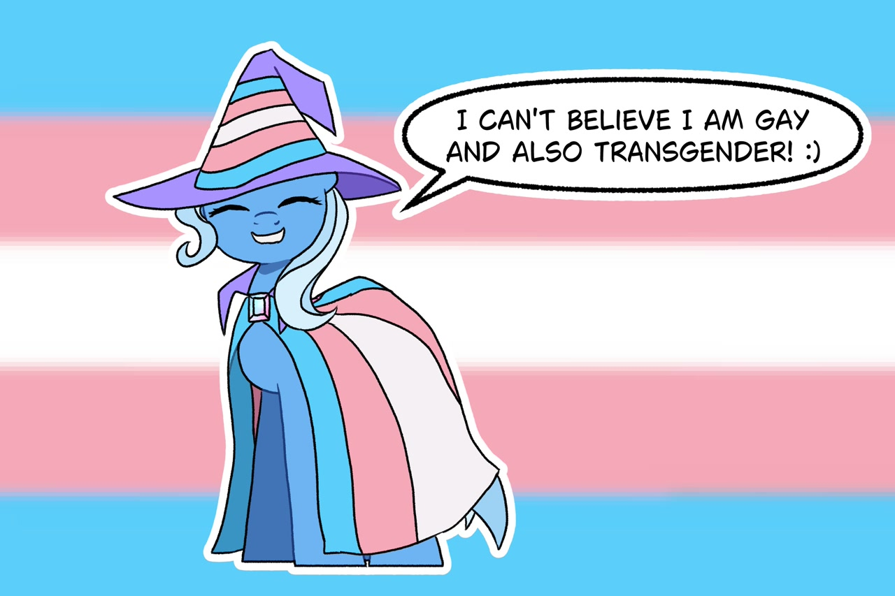

Hewo! I´m Gamer, also known as Klára or Clara
I am a trans girl who uses it/she pronouns and I am a changeling who also likes being in its pony form, specifically a pegas pony form.
When I say that I´m a changeling, I mean it :3 I´m what´s called an otherkin or therian! An individual who doesnt identify as human.
And also I´m inside a plural system of 4, including me there are 4 people in this brain. Their names are Therix, Rose and Jane.
My hobbies and interests include worldbuilding, gaming, coding, conlanging, drawing, math, My Little Pony, Mars, aliens and more!
And lastly, I really like understanding different people and I try to be as kind as I can!
I speak Slovak, English and toki pona
I am bisexual but more specifically finsexual (attraction to feminine people of any gender, though of course femininity is subjective and me being attracted to you doesnt mean you are a girl)
